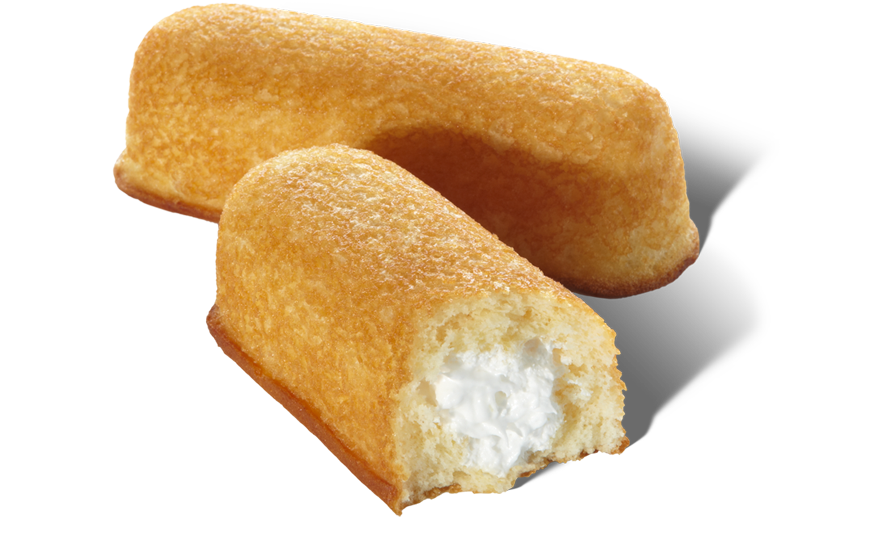

in·fa·mous
adjective
well known for some bad quality or deed.
wicked; abominable.
Twinkies are likely one of the things that Americans hate to love. They always comment on how bad for you they are and how they are probably one of the only things that could survive a nuclear apocolpyse. Yet we continue to buy them in the millions and even went so far as to supporting them through a bancruptcy.
No matter what the end of the Twinkie may be in the future they will forever live in infamy.